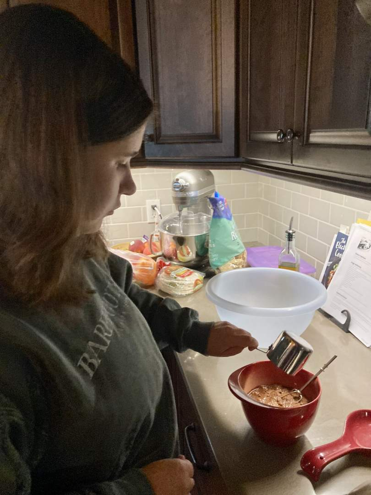
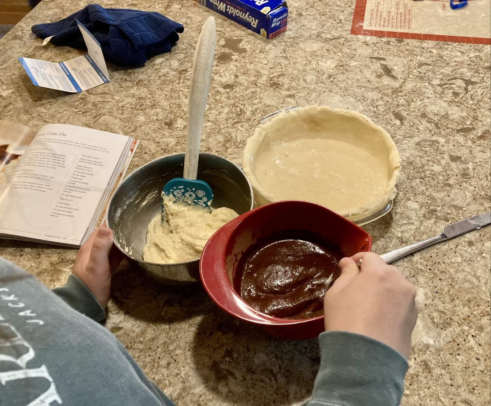
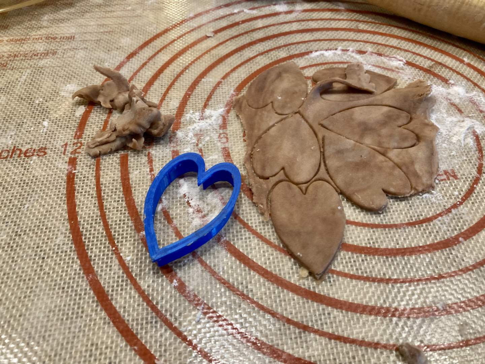
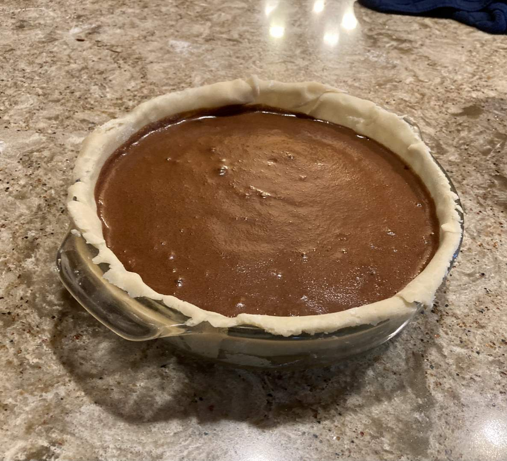
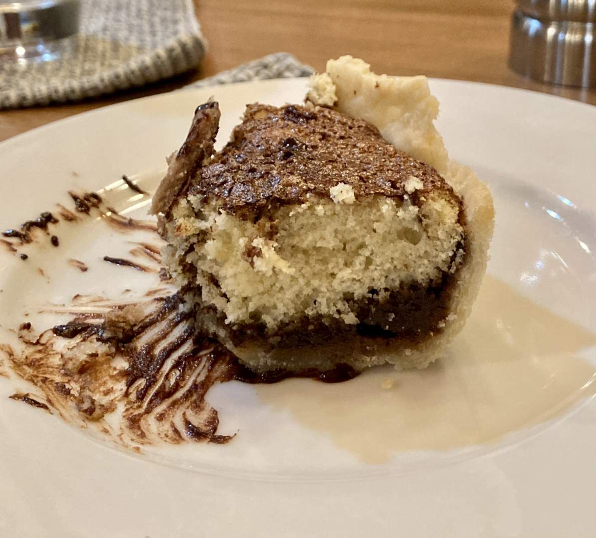
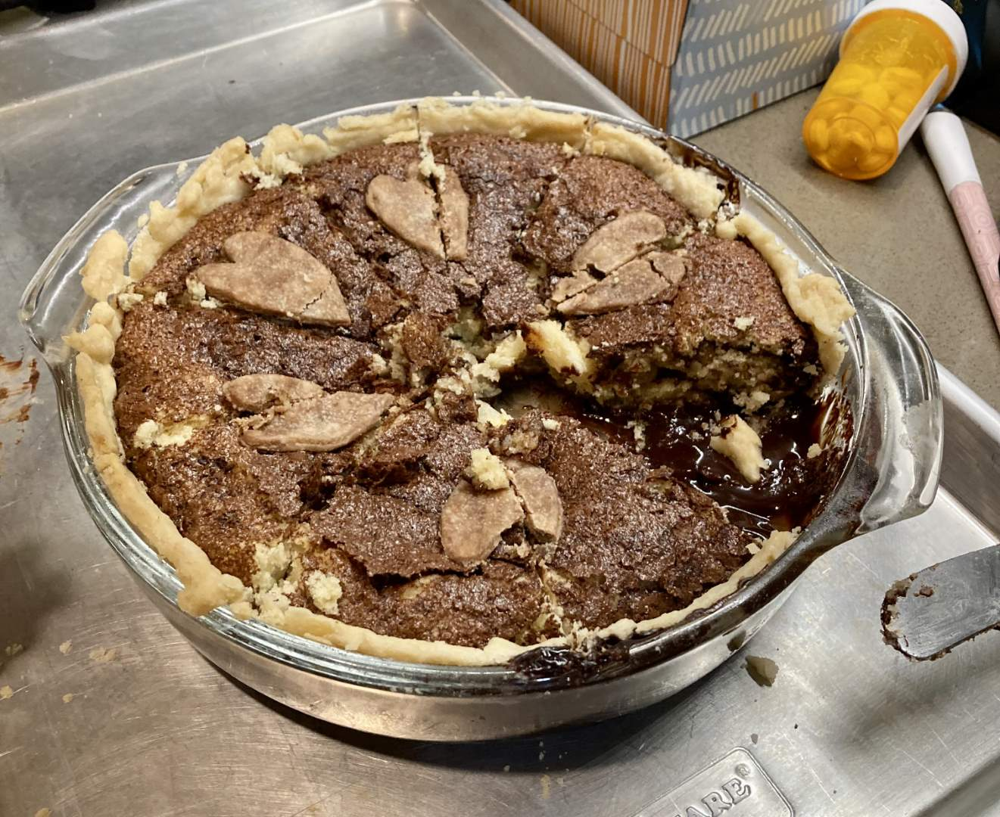
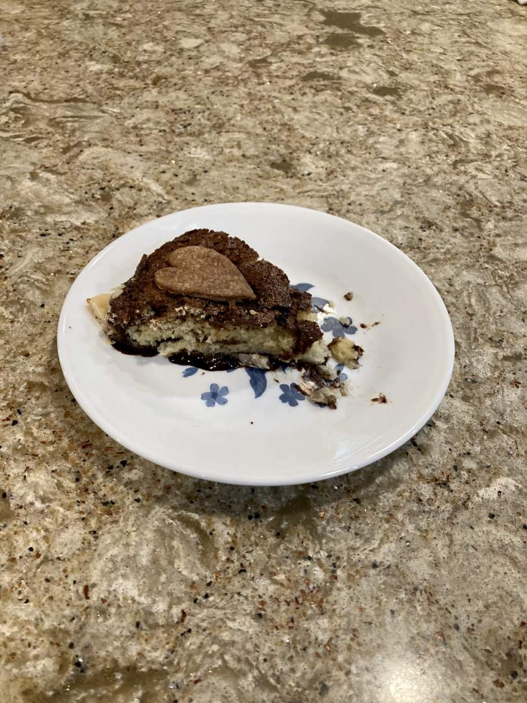

Pie 7: Funny Cake Pie
2023-08-09Filling recipe from p. 181 of Me, Myself, and Pie by Sherry Gore.
Crust recipe from the same book.
Taste:
Difficulty:
Vibes:
Suggested pairings: chicken fajitas
Chocolate? Cake? Pie? Is such a perfect trifecta even legal in the United States of America? No, so don’t snitch.
Family from out of town visited this week, so Ben and I decided to bless these weary travelers with a pie. There was not much time between our decision to make a pie and the dinner for which the pie was required. Therefore, our ingredients and creativity were limited. I flipped fervently through Me, Myself, and Pie, a sacred tome known to this blog for its scrumptious peach pie recipe. After perusing the pantry and consulting Ben, we settled on a funny cake pie. The cake part of this pie is easily deduced: it has a cake-like texture. But how can a pie be funny? By doing a flip, obviously.
Ben began the crust shortly after we came home, anxious to get the pie done early so that it had time to firm up (we got a few complaints about how long it took the last pie to cool before it could be eaten, an understandable quibble). Once the pie crust was rolled out and fridged, I began working on two mixtures for the filling. The first concoction was similar to white cake batter. The second resembled brownie batter without flour.
 Like casting wingardium leviosa for the first time, the directions for constructing this pie were specific but simple. First, the goopy white batter had to be deposited and smoothed along the bottom of the raw crust. Next, the runny chocolate sauce could cascade onto the cakey surface below, covering its pale face. Finally, a butter knife had to be carefully swirled through the layer of batter hidden beneath the black soup, careful not to puncture the crust further below. Like Ron emphasizing the wrong syllable in Charms, we failed to master this last step and sliced through the pie crust.
This led to a bit of spillage and seepage of chocolate to the bottom of the pie. We also did not swirl the batter sufficiently, blunting the “funniness” of the pie’s flip.

That’s right folks, the pie did flip! What began on the top made its way to the bottom, leaving behind a marbled interior and a rich, chocolate sauce on the bottom of the pie. To add to the joy of this pie, Ben used some remaining dough, cocoa powder, and 3D printed cookie cutters made by his father to form small hearts that we used to adorn the surface of our pie. This was our first attempt at superfluous decoration on a pie, and we were very happy with the outcome. Despite the pie not turning out exactly as desired, its name and appearance nonetheless left smiles on the faces of those who partook.
It was declared by all to be most delicious, the highest compliments coming from Ben’s cousin and brother, who typically do not enjoy pies. The texture and taste profile of the pies resembled other desserts enough that the pie felt familiar. And anyway, when did chocolate ever make anything worse? We would definitely recommend this pie as a tool for pastry evangelism. As mentioned in other posts, the best pies are those consumed during a single sitting by loved ones after a delicious meal. The taste was nothing exceptional, yet its simplicity made it all the more enticing. It was simply a delight.
“Y’all! Where’s the savory pie representation? This is discrimination the likes of which the Supreme Court has never made a ruling on!” Hold ‘yer horses partner, we know there’s a world of pies out there, the likes of which our small sugar-addicted brains struggle to conceive. But they have not been forgotten. The moment will arrive when a truly savory pie graces our front page, a moment which is fast approaching since we soon will have to take responsibility for fully stocking our own pantry and feeding our own selves.
 